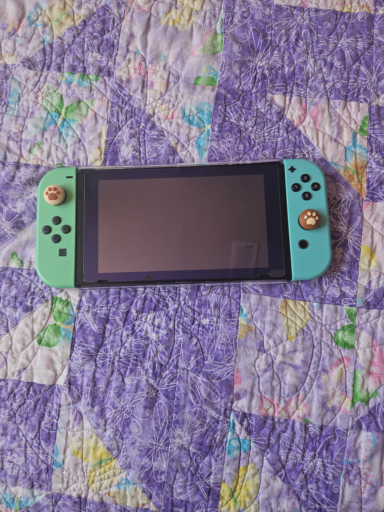
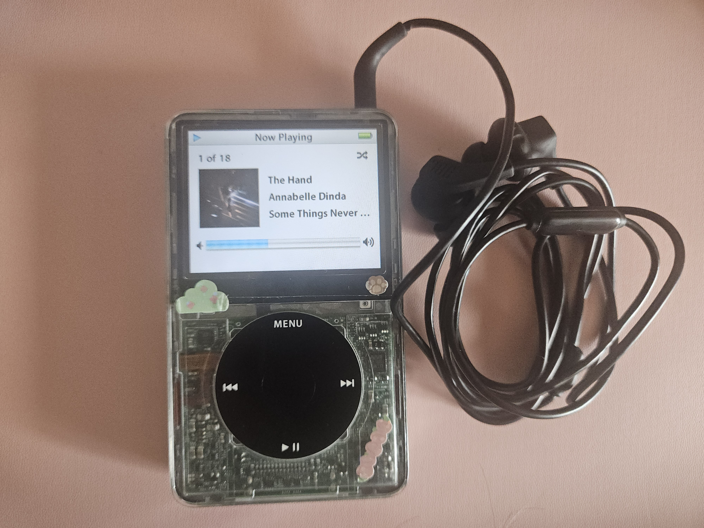

c: \modding\projects.txt

Joy-con switch

iPod Mod
PSP 3000
FROM THE JOURNAL
digicam in daily life
I finally bought my dream digicam. I am not ashamed to say its the camera Bella got in the New Moon movie......
owning or being owned
Have we all been lied to, everything at our finger but are we really using them the correctly......